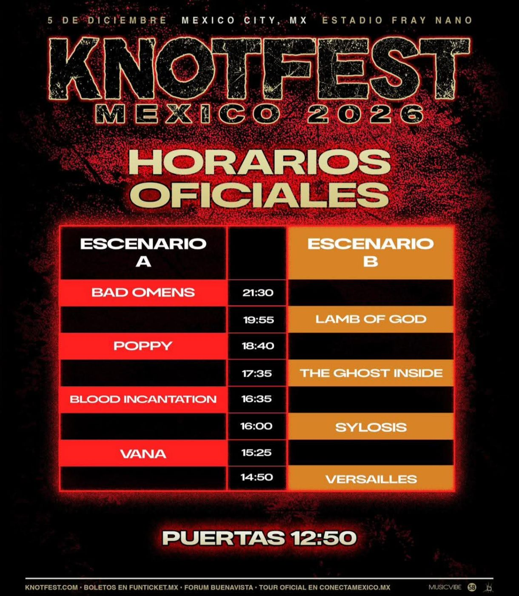

[E]l silencio tiene los días contados. La Ciudad de México se prepara para convertirse en el epicentro de una tormenta eléctrica que no dará tregua. Knotfest México 2026 ha liberado finalmente sus horarios oficiales, confirmando que el Estadio Fray Nano será el escenario de un asalto sonoro sin precedentes este próximo 5 de diciembre.
Con una alineación que equilibra la agresividad moderna y el misticismo del metal, el festival despliega su artillería pesada. Bad Omens y Lamb of God se perfilan como los verdugos principales de una jornada donde el slam es el único idioma permitido. La inclusión de Poppy añade esa dosis de caos vanguardista necesaria para fracturar cualquier expectativa.

Desde la apertura de puertas a las 12:50, el ambiente estará cargado de distorsión. El despliegue incluye nombres que garantizan la destrucción total: el metal técnico de Sylosis, el death metal cósmico de Blood Incantation y el regreso esperado del visual kei con Versailles. No hay espacio para el descanso en esta hoja de ruta diseñada para el colapso.
La logística del caos está lista: dos escenarios, más de diez horas de ruido ininterrumpido y una comunidad lista para el ritual. Los boletos están disponibles a través de Funticket.mx, pero la advertencia es clara: una vez que el primer acorde de Versailles rompa el aire a las 14:50, no habrá marcha atrás.